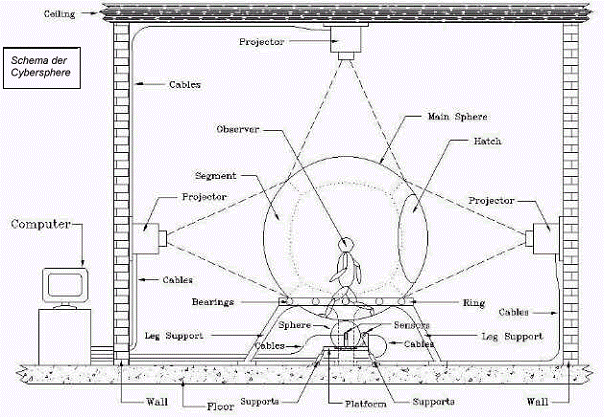
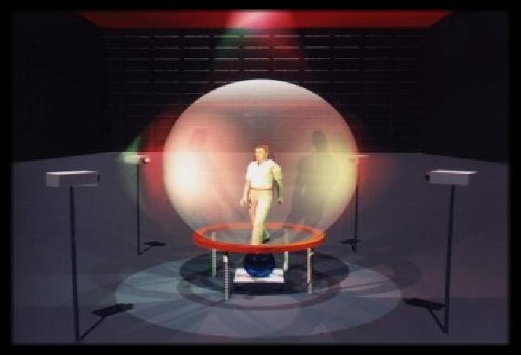

Eine Cybersphere ist ein sphärisches Projektionssystem, dessen zentrale Komponente eine durchsichtige Hohlkugel von 3,5 m Durchmesser, bestehend aus Polycarbonat-Segmenten, bildet. Diese Hohlkugel ist auf einem mit Kugellagern bestückten Gummiring gelagert, was eine freie Rotation der Hohlkugel ermöglicht und die Hohlkugel in einer zentralen Position hält. Unter der Hohlkugel ist eine weitere, kleinere Kugel angebracht, welche durch eine Federung gegen die große Hohlkugel gedrückt wird und deren Bewegung über 3 Rotationssensoren (tracker balls) abgetastet wird.
Das Innere der Hohlkugel dient als Projektionsfläche für Bilder, die von einem Computer generiert, welche durch Projektoren auf die Kugelinnenfläche abgebildet werden.
Ein Betrachter, der über eine Einstiegsluke in das Innere der Hohlkugel gelangen kann, hat somit die Möglichkeit diese projizierten Bilder wahrzunehmen. Bewegt er sich innerhalb der Kugel fort, so rotiert die Hohlkugel entsprechend der Bewegungen des Betrachters. Die Rotationsbewegungen der Hohlkugel werden an die kleinere Kugel übertragen und durch die Rotationssensoren aufgezeichnet. Die Daten der Rotationssensoren werden an den Computer weitergeleitet, der wiederum neue Bilder für die Projektion auf die Hohlkugelinnenseite generiert.
Um während des laufenden Betriebs eine leichtgängige Rotation der Hohlkugel zu gewährleisten, wird diese durch ein Luftkissen, welches durch einen Ventilator erzeugt wird, angehoben.
Ausarbeitung zum Thema Cybersphere von Grischa Alexander Rehmer (PDF)

